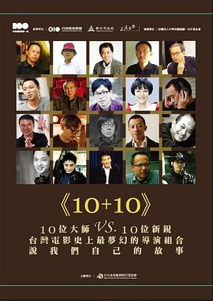

十加十 / 10+10
又名：Ten Plus Ten
作品信息
| 导演 | 王小棣 / 王童 / 朱延平 / 何蔚庭 / 吴念真 Nien-Jen Wu / 沈可尚 / 侯孝贤 / 侯季然 / 张艾嘉 / 张作骥 / 陈玉勋 / 陈国富 / 陈骏霖 / 杨雅喆 / 郑文堂 / 郑有杰 / 萧雅全 / 戴立忍 / 钟孟宏 / 魏德圣 |
| 编剧 | 杨雅喆 |
| 主演 | 舒淇 / 梅芳 / 张韶涵 / 戴立忍 / 桂纶镁 / 高捷 / 柯有伦 / 林辰唏 |
| 类型 | 剧情 |
| 制片国家/地区 | 中国台湾 |
| 语言 | 汉语普通话 / 闽南语 |
| 上映日期 | 2011-12-16(中国台湾) |
| 片长 | 114分钟 |
| IMDb | tt2243123 |
最后一次看到是 2026-08-12T21:13:12+08:00 · 豆瓣原页